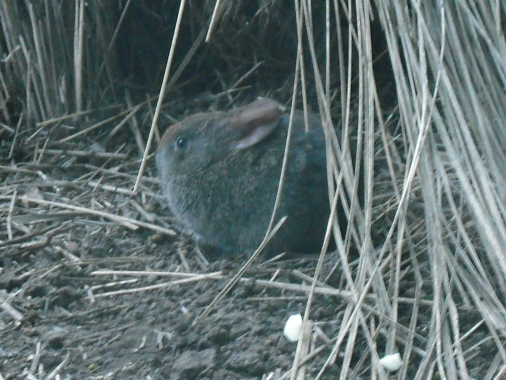

Králík lávový (Romerolagus diazi), také známý jako Romerův, v domovině nazývaný teporingo nebo zacatochin je nejvzácnější a nejohroženější druh králíka na světě. Je endemitem mexického pohoří Chichinautzin. Ve volné přírodě žije odhadem méně než 7000 jedinců (2020). Králík lávový je chráněn mexickými zákony a mezinárodními dohodami. Je předmětem různých programů na ochranu druhů a obnovu populace. Část areálu se nachází v chráněných národních parcích.
Je druhým nejmenším králíkem ne světě (nejmenší je králík západoamerický). Měří 23,4 až 32,1 cm. Samci váží průměrně 417 gramů, samice bývají o něco větší, dosahují hmotnosti až 536 gramů. Malé zaoblené uši má výrazně kratší než většina druhů králíků. Zadní nohy má vůči tělu krátké. Zakrnělý ocas, který měří půl centimetru až jeden centimetr, není téměř vidět (znatelný je u narozených mláďat). Krátká hustá a jemná srst je prošedivělá, šedá až tmavě hnědá, na hřbetě a na bocích černavá, což pomáhá králíkům splynout se skalnatým povrchem sopečného původu. Spodní strana těla je světlejší, místy bělavá.
